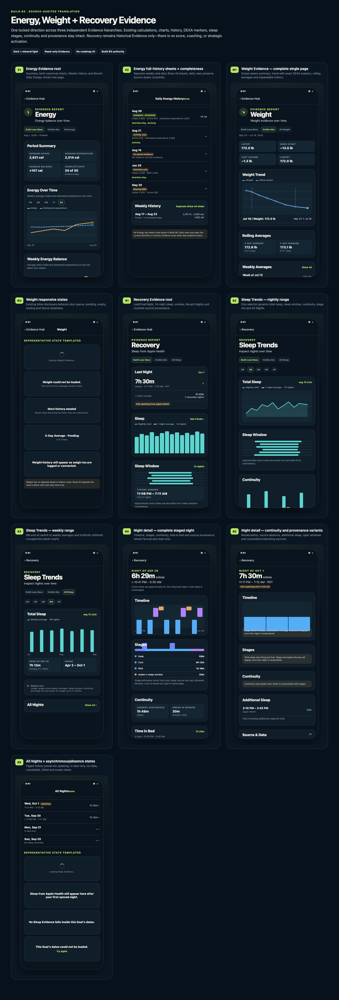
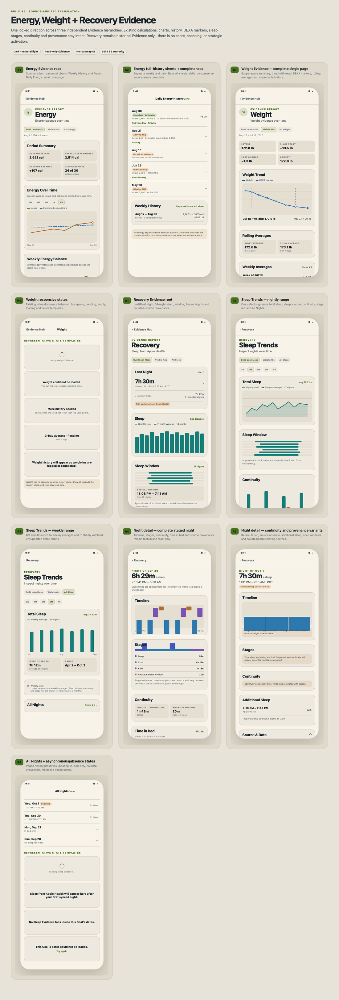

Founder review · focused hierarchy translation
Energy, Weight + Recovery Evidence
Ten materially distinct templates cover all current routes and state families. Dark and mineral-light are content-identical. Use the full boards for rapid hierarchy review and the individual PNGs for pixel inspection.
Energy · 2 templatesWeight · 2 templatesRecovery · 6 templates20 theme renders
Dark

Mineral light
